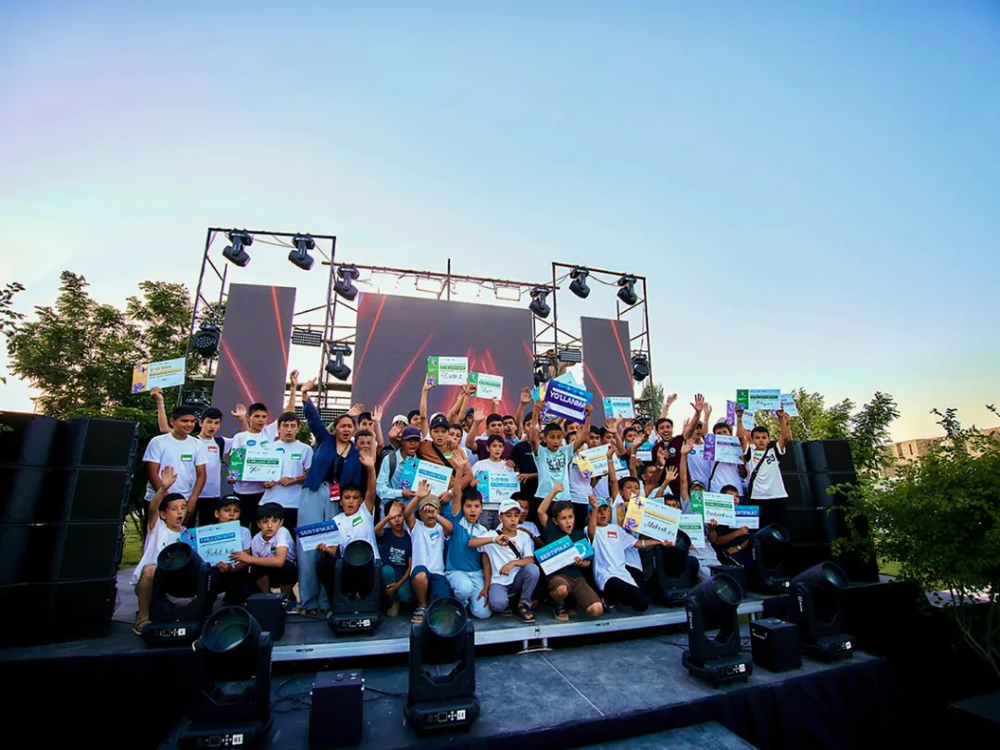
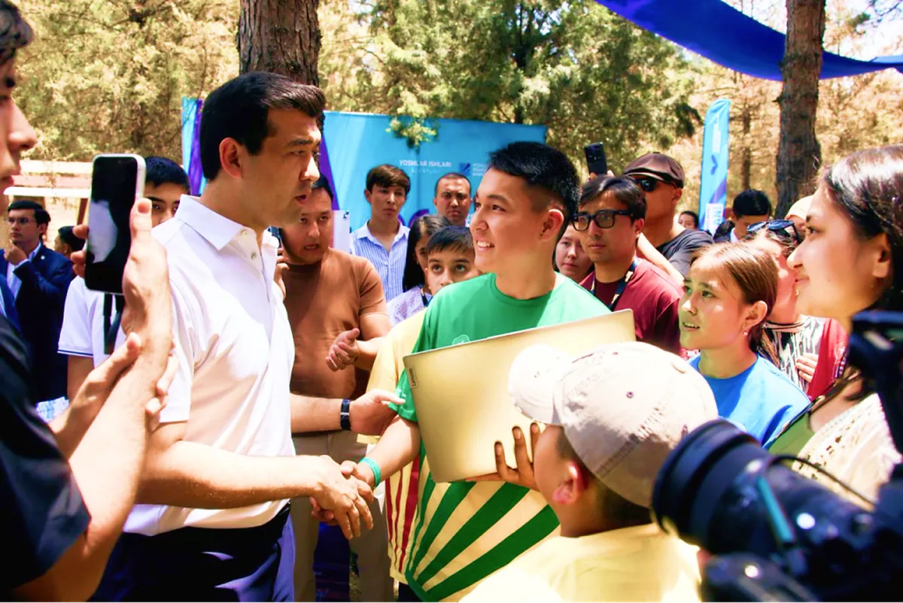
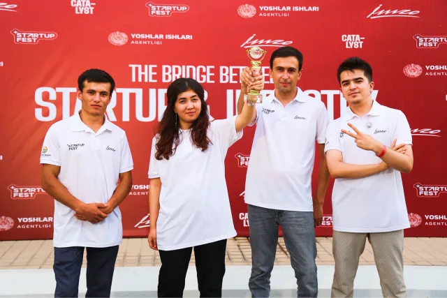
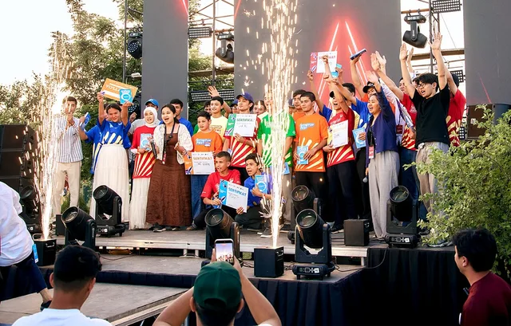
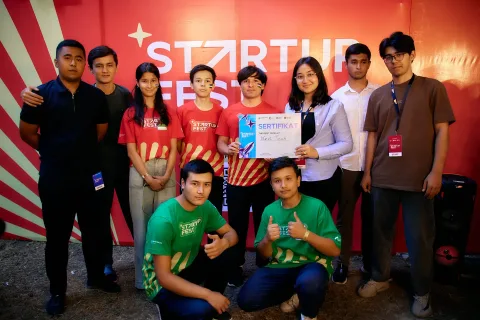
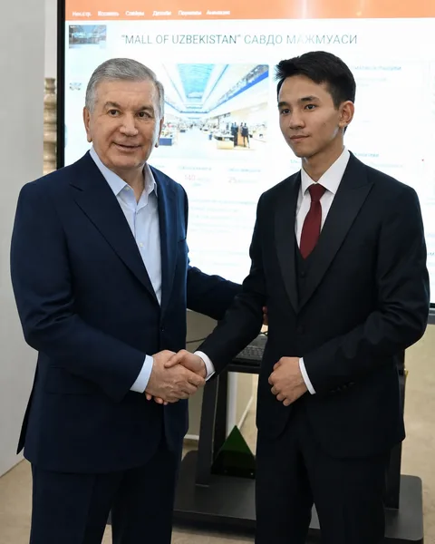
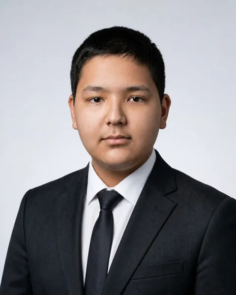

StartupFestg‘oyangiz uchunyaratilgan ekotizim
O‘zbekistonning yangi avlod quruvchilariga kuch beramiz
G‘oyasi bor, ammo hamfikr jamoa yoki yo‘l topa olmayotgan yoshlarni bir maydonga jamlab, ularni g‘oyadan haqiqiy mahsulotgacha olib boramiz. Bugungi kunda StartupFest — bitta tadbir emas, balki bir necha yo‘nalishni birlashtirgan ekotizim.

Bir maydonda,bir maqsadda
StartupFest — g‘oyalar, jamoalar va imkoniyatlarning birlashgan makoni. Butun O‘zbekistondan yoshlar shu yerda hamfikrlarini topadi.
G‘oyadanmahsulotgachabir kunda.

Butun14 hududdaO‘zbekiston bo‘ylab
Dasturlar:
G‘oyadan Natijagacha
Har bir startap o‘z yo‘liga muhtoj. Shuning uchun StartupFest turli bosqich va sohadagi tadbirkorlar uchun maxsus ishlab chiqilgan dasturlar taklif etadi — g‘oyangizni real natijaga aylantirish uchun kerakli barcha vosita, bilim va aloqalar bilan.

Catalyst
Sanoat va startaplar o'rtasidagi ko'prik. Jamoalar korxona ichiga kirib, real muammoni o'z ko'zi bilan ko'radi va yechimini to'g'ridan-to'g'ri qaror qabul qiluvchi rahbariyatga taqdim etadi.

Startup va Muhandislik Festivali
O‘zbekistonning startup va muhandislik festivali. Yosh muhandislar va innovatorlarni bir maydonga jamlagan yirik tadbir!
StartupFest Ortidagi Insonlar
O‘zbekiston yoshlari orasida yosh iste’dodlarni faollashtirishga bag‘ishlangan tashkilotchilar, muhandislar va ekotizim quruvchilar jamoasi.


Yangiliklar va Maqolalar
StartupFest ekotizimida bo‘lib o‘tayotgan tadbirlar, e’lonlar va ishtirokchilarimiz haqidagi foydali maqolalarni shu yerdan kuzatib boring.

14 hudud, 1 harakat
Birinchi respublika bo‘ylab safarimiz startap ekotizimini bevosita hududlarga olib chiqdi: 1 500 dan ortiq o‘quvchi robototexnika, AI va fintech yo‘nalishlarida yechim yaratdi.

G‘oyadan MVP gacha — bir kunda qanday?
Ishtirokchilar sun’iy intellekt vositalari yordamida bir kun ichida ishlaydigan mahsulotni qanday yaratdi.

Yangi jamoalar, yangi imkoniyatlar
StartupFest yosh asoschilar uchun bilim, aloqa va hamfikrlarni bir joyga jamlaydi.
Bizning yulduzlarimiz
Yosh asoschilar yaratgan eng yorqin loyihalar va jamoalar — har bir muvaffaqiyatli startap StartupFest ekotizimida yonib chiqqan yangi yulduz.

